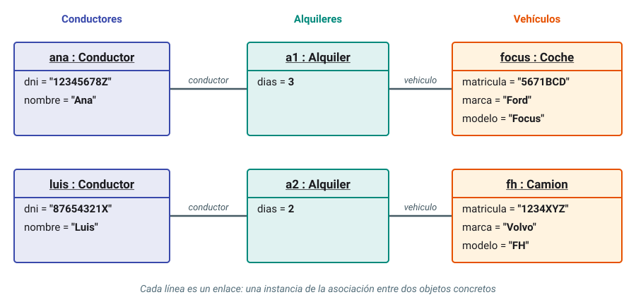

5. Asociaciones en profundidad¶
Las clases rara vez trabajan solas: un alquiler necesita un vehículo y un conductor; una flota agrupa vehículos. Estas conexiones se dibujan como relaciones y son, junto a las clases, lo que da sentido a un diagrama de clases. La relación más básica y más frecuente es la asociación, y en este capítulo la estudiamos con todo detalle: cómo se nombra, cuántos objetos conecta, hacia dónde se puede «navegar» y cómo se convierte en código.
5.1. ¿Qué es una asociación?¶
Una asociación indica que los objetos de una clase están conectados con objetos de otra, de modo que unos conocen a los otros y pueden enviarse mensajes. Se dibuja con una línea continua entre las dos clases.
Pensemos en la empresa de alquiler. Un alquiler tiene un conductor, y esa conexión es una asociación:
classDiagram
class Conductor {
-dni : String
-nombre : String
}
class Alquiler {
-dias : int
}
Conductor -- Alquiler@startuml
skinparam classAttributeIconSize 0
class Conductor {
- dni : String
- nombre : String
}
class Alquiler {
- dias : int
}
Conductor -- Alquiler
@enduml
La línea dice «están relacionados», pero todavía no dice cómo ni cuántos. Para ser útil, una asociación se completa con un nombre, multiplicidades, roles y navegabilidad, que veremos uno a uno.
En el código
Una asociación entre Alquiler y Conductor se convierte en Java en un atributo cuyo tipo es la otra clase: Alquiler tendrá un campo private Conductor conductor;. Por eso en el capítulo 4 vimos que ese campo no se dibuja como atributo: ya lo expresa la línea.
5.2. Nombre de la asociación y sentido de lectura¶
Se le puede poner un nombre (normalmente un verbo) que explique el vínculo. Junto al nombre se añade un pequeño triángulo que indica en qué sentido se lee (en Mermaid se suele escribir el verbo; en PlantUML se puede añadir > o <).
Conductor ── realiza ──▶ Alquiler «Un conductor realiza alquileres»
classDiagram
Conductor -- Alquiler : realiza
Alquiler -- Vehiculo : alquila@startuml
Conductor -- Alquiler : realiza >
Alquiler -- Vehiculo : alquila >
@enduml
Un buen nombre permite leer el diagrama como frases: «un conductor realiza alquileres», «un alquiler alquila un vehículo». Si el nombre es evidente (por ejemplo, «tiene»), se puede omitir; si no, conviene escribirlo.
Cómo elegir el nombre
Usa un verbo en presente que forme una frase con los nombres de las clases: Médico — atiende — Paciente, Profesor — imparte — Asignatura. Evita nombres vacíos como «se relaciona con» o «tiene a».
5.3. Multiplicidad¶
La multiplicidad (o cardinalidad) indica cuántos objetos de una clase pueden estar asociados con un objeto de la otra. Se escribe en cada extremo de la línea.
| Multiplicidad | Se lee | Ejemplo |
|---|---|---|
1 |
Exactamente uno | Un alquiler tiene un conductor |
0..1 |
Cero o uno (opcional) | Un alquiler tiene un segundo conductor, o ninguno |
* o 0..* |
Cero o más | Un conductor realiza cero o más alquileres |
1..* |
Uno o más (al menos uno) | Una flota tiene al menos un vehículo |
m..n |
Entre m y n | Un coche tiene de 2..5 puertas |
3 |
Un número exacto | Un triciclo tiene 3 ruedas |
Cómo se lee¶
La regla que nunca falla: la multiplicidad de un extremo dice cuántos objetos de ESA clase hay por cada objeto de la clase del otro extremo. Se lee empezando por un extremo y mirando el número del extremo opuesto.
classDiagram
Conductor "1" -- "0..*" Alquiler : realiza
Alquiler "0..*" -- "1" Vehiculo : alquila@startuml
Conductor "1" -- "0..*" Alquiler : realiza >
Alquiler "0..*" -- "1" Vehiculo : alquila >
@enduml
| Pregunta | Se mira el número de… | Respuesta |
|---|---|---|
| ¿Cuántos alquileres tiene un conductor? | el extremo de Alquiler |
0..*: ninguno, uno o muchos |
| ¿Cuántos conductores tiene un alquiler? | el extremo de Conductor |
1: exactamente uno |
| ¿Cuántos alquileres puede tener un vehículo? | el extremo de Alquiler |
0..*: ninguno, uno o muchos |
| ¿Cuántos vehículos tiene un alquiler? | el extremo de Vehiculo |
1: exactamente uno |
El error clásico
Leer el número del mismo lado de la clase por la que empiezas. La multiplicidad 0..* junto a Alquiler no significa que un alquiler tenga muchos conductores, sino que un conductor tiene muchos alquileres. Repítelo siempre en las dos direcciones.
Tipos de asociación según sus multiplicidades¶
| Tipo | Multiplicidades | Ejemplo |
|---|---|---|
| Uno a uno | 1 — 1 (o 0..1) |
Una persona — su pasaporte |
| Uno a muchos | 1 — * |
Un conductor — sus alquileres |
| Muchos a muchos | * — * |
Conductores — vehículos que alquilan |
La multiplicidad depende del enunciado¶
¿Cuántos alquileres tiene un vehículo? Depende de qué pregunta haces:
- En un instante dado, un vehículo solo está en un alquiler (
0..1). - A lo largo del tiempo, un vehículo puede participar en muchos alquileres (
0..*).
Si el diagrama guarda el histórico de alquileres, usa 0..*. Si solo representa el alquiler vigente, 0..1. Lo importante es que el diagrama responda a lo que pide el problema, y que las multiplicidades se lean de la misma manera en todo el curso: aquí, salvo que se indique lo contrario, se entiende el histórico.
5.4. Roles¶
Cada extremo de una asociación juega un papel o rol respecto al otro. El rol se escribe junto a la línea, en el extremo correspondiente, y se traduce normalmente en el nombre del atributo del código.
Entre Alquiler y Conductor, el conductor es quien «conduce» el vehículo; entre Alquiler y Vehiculo, el vehículo es el «vehículo alquilado»:
classDiagram
Alquiler "0..*" --> "1 conductor" Conductor
Alquiler "0..*" --> "1 vehiculo" Vehiculo@startuml
Alquiler "0..*" --> "1" Conductor : conductor
Alquiler "0..*" --> "1" Vehiculo : vehiculo
@enduml
public class Alquiler {
private Conductor conductor; // rol «conductor»
private Vehiculo vehiculo; // rol «vehiculo»
}
Los roles son imprescindibles cuando hay varias asociaciones entre las mismas clases o cuando una clase se relaciona consigo misma (apartados 5.6 y 5.7), porque sin rol no se sabría distinguirlas.
5.5. Navegabilidad¶
La navegabilidad indica quién conoce a quién: desde qué clase se puede llegar a la otra. Se representa con una flecha abierta al final de la línea, apuntando a la clase que se conoce.
| Notación | Significa | Ejemplo |
|---|---|---|
A ──▶ B |
Unidireccional: A conoce a B, pero B no conoce a A |
Alquiler → Vehiculo |
A ───── B (sin flechas) |
Bidireccional (o sin especificar): ambas se conocen | Conductor — Alquiler |
A ──✕ B |
A no puede navegar a B (poco usada) |
— |
Unidireccional: lo habitual y lo recomendable¶
En nuestra empresa, un alquiler necesita saber qué vehículo alquila, pero un vehículo no necesita conocer la lista de sus alquileres. Es una asociación unidireccional:
classDiagram
class Alquiler {
-dias : int
+getTotal() double
}
class Vehiculo {
-matricula : String
}
Alquiler "0..*" --> "1" Vehiculo : alquila@startuml
Alquiler "0..*" --> "1" Vehiculo : alquila
@enduml
public class Alquiler {
private Vehiculo vehiculo; // Alquiler conoce a Vehiculo
public Vehiculo getVehiculo() { return vehiculo; }
}
public abstract class Vehiculo {
// Vehiculo NO tiene ningún campo de tipo Alquiler
}
La flecha apunta a la clase que se conoce (Vehiculo) y el atributo está en la clase de origen (Alquiler).
Bidireccional: cuando ambas partes necesitan conocerse¶
Si el conductor tiene que poder consultar sus alquileres y, a la vez, cada alquiler tiene que conocer a su conductor, la asociación es bidireccional y las dos clases guardan una referencia a la otra:
classDiagram
class Conductor {
-nombre : String
+getAlquileres() List~Alquiler~
}
class Alquiler {
-dias : int
+getConductor() Conductor
}
Conductor "1" -- "0..*" Alquiler : realiza@startuml
Conductor "1" -- "0..*" Alquiler : realiza >
@enduml
public class Conductor {
private List<Alquiler> alquileres = new ArrayList<>();
public List<Alquiler> getAlquileres() { return alquileres; }
}
public class Alquiler {
private Conductor conductor;
public Conductor getConductor() { return conductor; }
}
El coste de la bidireccionalidad
Si las dos clases guardan una referencia, el programador debe mantener ambas sincronizadas: al crear un alquiler hay que añadirlo a la lista del conductor y asignar el conductor al alquiler. Si se olvida una de las dos, el modelo queda inconsistente. Por eso la recomendación es: empieza con asociaciones unidireccionales y hazlas bidireccionales solo cuando haga falta de verdad.
5.6. Asociación reflexiva¶
Una clase puede estar asociada consigo misma: objetos de una clase relacionados con otros de la misma clase. Es una asociación reflexiva y siempre necesita roles para distinguir los dos extremos.
Ejemplo: en la empresa, algunos empleados supervisan a otros.
classDiagram
class Empleado {
-nombre : String
}
Empleado "0..1 jefe" --> "0..* subordinados" Empleado : supervisa@startuml
class Empleado {
- nombre : String
}
Empleado "jefe 0..1" --> "subordinados 0..*" Empleado : supervisa
@enduml
public class Empleado {
private String nombre;
private Empleado jefe; // 0..1: puede ser null
private List<Empleado> subordinados = new ArrayList<>(); // 0..*
}
Se lee: «un empleado tiene como máximo un jefe» (0..1: el director no tiene ninguno) y «un jefe tiene cero o más subordinados». Otros ejemplos típicos: una categoría con subcategorías, una persona con padres e hijos, una carpeta que contiene otras carpetas.
5.7. Varias asociaciones entre las mismas clases¶
Entre dos clases puede haber más de una asociación, cada una con un significado distinto. Los roles (y los nombres) permiten distinguirlas.
Imagina que la empresa permite añadir a un alquiler un segundo conductor, opcional:
classDiagram
direction LR
class Alquiler {
-dias : int
}
class Conductor {
-dni : String
-nombre : String
}
Alquiler "0..*" --> "1" Conductor : titular
Alquiler "0..*" --> "0..1" Conductor : segundoConductor@startuml
Alquiler "0..*" --> "1" Conductor : titular
Alquiler "0..*" --> "0..1" Conductor : segundoConductor
@enduml
public class Alquiler {
private Conductor titular; // 1: obligatorio
private Conductor segundoConductor; // 0..1: puede ser null
}
Fíjate en que cada rol da lugar a un atributo distinto del mismo tipo. Sin roles, el diagrama no explicaría qué diferencia hay entre las dos líneas.
5.8. Relaciones muchos a muchos y clase de asociación¶
Una asociación muchos a muchos conecta objetos de dos clases en los que ambos lados pueden tener varios: un conductor alquila varios vehículos a lo largo del tiempo, y un vehículo es alquilado por varios conductores.
classDiagram
Conductor "*" -- "*" Vehiculo : alquilaEl problema aparece cuando la propia relación tiene datos: ¿cuántos días dura?, ¿cuál es su importe?, ¿en qué fecha empieza? Esos datos no pertenecen ni al conductor ni al vehículo: pertenecen a la relación entre ambos. UML resuelve esto con una clase de asociación: una clase unida a la línea de la asociación con una línea discontinua.
@startuml
skinparam classAttributeIconSize 0
class Conductor {
- dni : String
- nombre : String
}
class Vehiculo {
- matricula : String
}
class Alquiler {
- dias : int
- fechaInicio : LocalDate
+ getTotal() : double
}
Conductor "*" -- "*" Vehiculo
(Conductor, Vehiculo) .. Alquiler
@enduml
classDiagram
class Conductor {
-dni : String
-nombre : String
}
class Vehiculo {
-matricula : String
}
class Alquiler {
-dias : int
-fechaInicio : LocalDate
+getTotal() double
}
Conductor "1" -- "0..*" Alquiler : realiza
Alquiler "0..*" -- "1" Vehiculo : alquilaMermaid no tiene clases de asociación
Mermaid no dibuja la clase de asociación pegada a la línea. La alternativa, que además es como se programa en Java, es convertirla en una clase normal intermedia con dos asociaciones «uno a muchos»: la que sale del conductor y la que sale del vehículo. Es lo que hicimos en el curso de POO con Alquiler.
La regla práctica es:
Si una relación muchos a muchos tiene atributos propios (o comportamiento propio), conviértela en una clase.
Otros ejemplos clásicos:
| Muchos a muchos | Atributos de la relación | Clase de asociación |
|---|---|---|
| Alumno — Asignatura | nota, convocatoria | Matricula |
| Médico — Paciente | fecha, diagnóstico | Consulta |
| Cliente — Producto | cantidad, precio, fecha | Compra / LineaPedido |
| Socio — Libro | fechas de préstamo y devolución | Prestamo |
5.9. De la asociación al código¶
Resumen de cómo se traduce una asociación a Java según su multiplicidad y su navegabilidad. Recuerda: el atributo se pone en la clase desde la que se puede navegar.
En el diagrama (A → B) |
En la clase A |
Ejemplo |
|---|---|---|
B con multiplicidad 1 |
Un campo de tipo B (obligatorio) |
private Vehiculo vehiculo; |
B con multiplicidad 0..1 |
Un campo de tipo B que puede ser null |
private Conductor segundoConductor; |
B con multiplicidad *, 0..* o 1..* |
Una colección de B |
private List<Extra> extras = new ArrayList<>(); |
| Bidireccional | Campo en A y campo en B |
Conductor.alquileres y Alquiler.conductor |
| Rol | Nombre del campo | rol titular → private Conductor titular; |
Aplicado a todo el Alquiler del curso de POO:
public class Alquiler {
private final Vehiculo vehiculo; // → Vehiculo [1]
private final Conductor conductor; // → Conductor [1]
private final int dias;
public Alquiler(Vehiculo vehiculo, Conductor conductor, int dias) {
this.vehiculo = vehiculo; // las partes se reciben ya creadas
this.conductor = conductor;
this.dias = dias;
}
}
En el constructor se reciben el vehículo y el conductor porque ambos existen antes y por sí mismos; esa es la diferencia con la composición, que verás en el capítulo 6.
5.10. Los objetos y sus enlaces¶
En el capítulo 3 vimos que un diagrama de objetos es una «fotografía» de objetos concretos. Ahora que hay asociaciones, esa fotografía también muestra los enlaces: cada línea entre dos objetos es una instancia de una asociación (un enlace es a la asociación lo que un objeto es a la clase).
Este diagrama muestra el estado del programa Main del curso de POO tras crear dos alquileres:

Vehiculo focus = new Coche("5671BCD", "Ford", "Focus", "rojo", 130, 5);
Vehiculo fh = new Camion("1234XYZ", "Volvo", "FH", "blanco", 460, 18000);
Conductor ana = new Conductor("12345678Z", "Ana");
Conductor luis = new Conductor("87654321X", "Luis");
Alquiler a1 = new Alquiler(focus, ana, 3);
Alquiler a2 = new Alquiler(fh, luis, 2);
@startuml
object "ana : Conductor" as ana {
dni = "12345678Z"
nombre = "Ana"
}
object "a1 : Alquiler" as a1 {
dias = 3
}
object "focus : Coche" as focus {
matricula = "5671BCD"
marca = "Ford"
modelo = "Focus"
}
a1 --> ana : conductor
a1 --> focus : vehiculo
@enduml
Los enlaces deben respetar las multiplicidades del diagrama de clases. Como cada Alquiler tiene 1 conductor y 1 vehículo, cada objeto alquiler debe tener exactamente un enlace con un conductor y exactamente uno con un vehículo. Si dibujas un alquiler sin vehículo, el diagrama de objetos contradice al de clases.
| Diagrama de clases | Diagrama de objetos |
|---|---|
Alquiler "0..*" --> "1" Vehiculo |
a1 → focus y a2 → fh: un enlace por alquiler |
Un vehículo puede estar en 0..* alquileres |
focus está en un alquiler; podría estar en dos, o en ninguno |
| Describe todas las situaciones posibles | Describe una situación concreta |
Resumen del capítulo¶
- Una asociación conecta clases cuyos objetos se conocen; en Java es un atributo del tipo de la otra clase.
- Se completa con nombre (verbo), roles (nombre del atributo), multiplicidad y navegabilidad.
- La multiplicidad se lee desde un extremo mirando el número del extremo opuesto, y siempre en las dos direcciones.
- La asociación unidireccional (
A ──▶ B) es la recomendable; la bidireccional exige mantener sincronizadas dos referencias. - Una asociación reflexiva y las múltiples entre dos clases necesitan roles.
- Una relación muchos a muchos con datos propios se convierte en una clase de asociación (en Java, una clase intermedia como
Alquiler). - Los enlaces del diagrama de objetos deben respetar las multiplicidades del diagrama de clases.
Actividades¶
Actividad 1. Interpreta este diagrama de una biblioteca. Escribe las frases que se leen en cada asociación (en ambos sentidos) y responde:
classDiagram
class Socio {
-numero : int
-nombre : String
}
class Prestamo {
-fechaPrestamo : LocalDate
-fechaDevolucion : LocalDate
}
class Libro {
-isbn : String
-titulo : String
}
Socio "1" -- "0..5" Prestamo : realiza
Prestamo "0..*" --> "1" Libro : se refiere a- ¿Cuántos préstamos puede tener un socio a la vez?
- ¿Puede existir un préstamo sin socio?
- ¿Puede un libro no haber sido prestado nunca?
- ¿Desde qué clase se puede navegar hasta
Libro? ¿Y desdeLibrohastaPrestamo? - ¿En qué clase pondrías un atributo del tipo del
Libro?
Solución
Frases: «Un socio realiza de cero a cinco préstamos»; «un préstamo lo realiza exactamente un socio»; «un préstamo se refiere a un libro»; «un libro aparece en cero o más préstamos».
- Hasta cinco (
0..5): no puede tener más de cinco préstamos. - No: en el extremo de
Sociola multiplicidad es1, así que cada préstamo tiene exactamente un socio. - Sí: en el extremo de
Prestamohay0..*, es decir, un libro puede no haberse prestado nunca. - Se navega de
PrestamoaLibro(la flecha apunta aLibro). DesdeLibrono se puede llegar a sus préstamos, porque la navegabilidad es unidireccional. - En
Prestamo:private Libro libro;, porque es la clase de origen de la flecha.
Actividad 2. En un hospital, cada médico trabaja en un único hospital y un hospital tiene muchos médicos. Un médico atiende a varios pacientes y un paciente puede ser atendido por varios médicos. De cada atención interesa guardar la fecha y el diagnóstico. Dibuja el diagrama de clases.
Solución
La relación médico-paciente es muchos a muchos y tiene datos propios (fecha, diagnóstico), así que se convierte en una clase de asociación Consulta:
classDiagram
class Hospital {
-nombre : String
}
class Medico {
-colegiado : String
-nombre : String
}
class Paciente {
-dni : String
-nombre : String
}
class Consulta {
-fecha : LocalDate
-diagnostico : String
}
Hospital "1" -- "1..*" Medico : emplea
Medico "1" -- "0..*" Consulta : realiza
Paciente "1" -- "0..*" Consulta : recibeEn PlantUML, con clase de asociación:
@startuml
Medico "*" -- "*" Paciente : atiende
(Medico, Paciente) .. Consulta
Hospital "1" -- "1..*" Medico : emplea
@enduml
Actividad 3. Dibuja el diagrama de clases (con multiplicidades y navegabilidad) que corresponde a este código Java:
public class Pedido {
private Cliente cliente;
private List<LineaPedido> lineas = new ArrayList<>();
}
public class LineaPedido {
private Producto producto;
private int cantidad;
}
public class Cliente {
private String nombre;
}
public class Producto {
private String nombre;
private double precio;
}
Solución
classDiagram
class Cliente {
-nombre : String
}
class Pedido
class LineaPedido {
-cantidad : int
}
class Producto {
-nombre : String
-precio : double
}
Pedido "0..*" --> "1" Cliente
Pedido "1" --> "1..*" LineaPedido : lineas
LineaPedido "0..*" --> "1" Producto- Cada campo cuyo tipo es una clase del modelo se convierte en una asociación (y no se escribe como atributo).
List<LineaPedido>→ multiplicidad*(aquí1..*, suponiendo que un pedido tiene al menos una línea).- Los campos solo están en la clase de origen → asociaciones unidireccionales, con la flecha hacia el tipo del campo.
cliente,producto… son roles, que coinciden con el nombre del campo.
Actividad 4. A partir del diagrama de clases de la actividad 1, dibuja un diagrama de objetos con: el socio s1 (número 7, nombre «Marta»), dos préstamos suyos p1 y p2, y dos libros distintos l1 y l2.
Solución
@startuml
object "s1 : Socio" as s1 {
numero = 7
nombre = "Marta"
}
object "p1 : Prestamo" as p1
object "p2 : Prestamo" as p2
object "l1 : Libro" as l1 {
titulo = "Dune"
}
object "l2 : Libro" as l2 {
titulo = "Ficciones"
}
s1 -- p1
s1 -- p2
p1 --> l1
p2 --> l2
@enduml
Cada préstamo tiene un socio y un libro (multiplicidad 1), y el socio tiene dos préstamos, menos que el máximo de cinco. Los valores de los atributos son ejemplos inventados.
Actividad 5. Una universidad guarda las categorías de sus asignaturas de forma jerárquica: una categoría (por ejemplo «Programación») puede estar dentro de otra («Informática»), y cada una puede contener varias subcategorías. La categoría raíz no tiene categoría superior. Dibuja el diagrama.
Solución
Es una asociación reflexiva con roles:
classDiagram
class Categoria {
-nombre : String
}
Categoria "0..1 padre" --> "0..* hijas" Categoria : contieneLa multiplicidad 0..1 en el extremo padre permite la categoría raíz (sin padre), y 0..* en hijas admite categorías sin subcategorías (las «hojas»). En Java: private Categoria padre; y private List<Categoria> hijas = new ArrayList<>();.